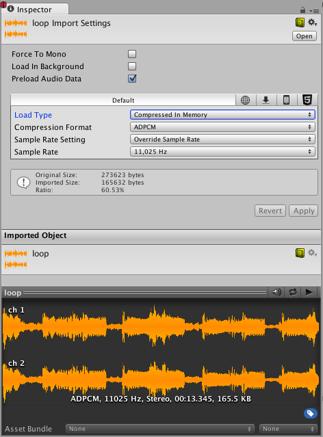
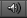

Audio Clip
Audio Clips contain the audio data used by Audio Sources. Unity supports mono, stereo and multichannel audio assets (up to eight channels). The audio file formats that Unity can import are .aif, .wav, .mp3, and .ogg. Unity can also import tracker modules in the .xm, .mod, .it, and .s3m formats. The tracker module assets behave the same way as any other audio assets in Unity although no waveform preview is available in the asset import inspector.

Options
Force To Mono
When this option is enabled, multi-channel audio will be mixed down to a mono track before packing.
Normalize
When this option is enabled, audio will be normalized during the "Force To Mono" mixing down process.
Load In Background
When this option is enabled, the loading of the clip will happen at a delayed time on a separate thread, without blocking the main thread.
Ambisonic
Ambisonic audio sources store audio in a format which represents a soundfield that can be rotated based on the listener's orientation. It is useful for 360-degree videos and XR applications. Enable this option if your audio file contains Ambisonic-encoded audio.
Properties
| Property: | Function: | |
|---|---|---|
| Load Type | The method Unity uses to load audio assets at runtime. | |
| Decompress On Load | Audio files will be decompressed as soon as they are loaded. Use this option for smaller compressed sounds to avoid the performance overhead of decompressing on the fly. Be aware that decompressing Vorbis-encoded sounds on load will use about ten times more memory than keeping them compressed (for ADPCM encoding it's about 3.5 times), so don't use this option for large files. | |
| Compressed In Memory | Keep sounds compressed in memory and decompress while playing. This option has a slight performance overhead (especially for Ogg/Vorbis compressed files) so only use it for bigger files where decompression on load would use a prohibitive amount of memory. The decompression is happening on the mixer thread and can be monitored in the "DSP CPU" section in the audio pane of the profiler window. | |
| Streaming | Decode sounds on the fly. This method uses a minimal amount of memory to buffer compressed data that is incrementally read from the disk and decoded on the fly. Note that decompression happens on the separate streaming thread whose CPU usage can be monitored in the "Streaming CPU" section in the audio pane of the profiler window. Note: Streaming clips has an overload of approximately 200KB, even if none of the audio data is loaded. | |
| Compression Format | The specific format that will be used for the sound at runtime. Note that the options available depend on the currently selected build target. | |
| PCM | This option offers higher quality at the expense of larger file size and is best for very short sound effects. | |
| ADPCM | This format is useful for sounds that contain a fair bit of noise and need to be played in large quantities, such as footsteps, impacts, weapons. The compression ratio is 3.5 times smaller than PCM, but CPU usage is much lower than the MP3/Vorbis formats which makes it the preferrable choice for the aforementioned categories of sounds. | |
| Vorbis/MP3 | The compression results in smaller files but with somewhat lower quality compared to PCM audio. The amount of compression is configurable via the Quality slider. This format is best for medium length sound effects and music. | |
| Sample Rate Setting | PCM and ADPCM compression formats allow automatically optimized or manual sample rate reduction. | |
| Preserve Sample Rate | This setting keeps the sample rate unmodified (default). | |
| Optimize Sample Rate | This setting automatically optimizes the sample rate according to the highest frequency content analyzed. | |
| Override Sample Rate | This setting allows manual overriding of the sample rate, so effectively this may be used to discard frequency content. | |
| Force To Mono | If enabled, the audio clip will be down-mixed to a single channel sound. After the down-mixing the signal is peak-normalized, because the down-mixing process typically results in signals that are more quiet than the original, hence the peak-normalized signal gives better headroom for later adjustments via the volume property of AudioSource | |
| Load In Background | If enabled, the audio clip will be loading in the background without causing stalls on the main thread. This is off by default in order to ensure the standard Unity behavior where all AudioClips have finished loading when the scene starts playing. Note that play requests on AudioClips that are still loading in the background will be deferred until the clip is done loading. The load state can be queried via the AudioClip.loadState property. | |
| Preload Audio Data | If enabled, the audio clip will be pre-loaded when the scene is loaded. This is on by default to reflect standard Unity behavior where all AudioClips have finished loading when the scene starts playing. If this flag is not set, the audio data will either be loaded on the first AudioSource.Play()/AudioSource.PlayOneShot(), or it can be loaded via AudioSource.LoadAudioData() and unloaded again via AudioSource.UnloadAudioData(). | |
| Quality | Determines the amount of Compression to be applied to a Compressed clip. Does not apply to PCM/ADPCM/HEVAG formats. Statistics about the file size can be seen in the inspector. A good approach to tuning this value is to drag the slider to a place that leaves the playback "good enough" while keeping the file small enough for your distribution requirements. Note that the original size relates to the original file, so if this was an MP3 file and Compression Format is set to PCM (i.e. uncompressed), the resulting Ratio will be bigger than 100% because the file is now stored uncompressed and taking up more space than the source MP3 that it came from. |
Preview Window
The Preview window contains three icons.
 When Auto Play is on the clips will play as soon as they are selected.
When Loop is on the clips will play in a continual loop.
This will play the clip.
Importing Audio Assets
Unity is able to read a wide range of source file formats. Whenever a file is imported, it will be transcoded to a format suitable for the build target and the type of sound. This is selectable via the Compression Format setting in the inspector.
In general, the PCM and Vorbis/MP3 formats are preferrable for keeping the sound as close to the original as possible. PCM is very lightweight on the CPU requirements, since the sound is uncompressed and can just be read from memory. Vorbis/MP3 allows adaptively discarding less audible information via the Quality slider.
ADPCM is a compromise between memory and CPU usage in that it uses only slightly more CPU than the uncompressed PCM option, but yields a constant 3.5 compression factor, which is in general about 3 times worse than the compression that can be achieved with Vorbis or MP3 compression. Furthermore ADPCM (like PCM) allows automatically optimized or manually set sample rates to be used, which -- depending on the frequency content of the sound and the acceptable loss of quality -- can further shrink the size of the packed sound assets.
Module files (.mod,.it,.s3m..xm) can deliver very high quality with an extremely low footprint. When using module files, unless you specifically want this, make sure that the Load Type is set to Compressed In Memory, because if it's set to Decompress On Load the whole song will be decompressed. This is a new behavior in Unity 5.0 that allows GetData/SetData to be used on these types of clips too, but the general and default use case for tracker modules is to have them compressed in memory.
As a general rule of thumb, Compressed audio (or modules) are best for long files like background music or dialog, while PCM and ADPCM is better for short sound effects that contain some noise, as the artefacts of ADPCM are too apparent on smooth signals. You should tweak the amount of Compression using the compression slider. Start with high compression and gradually reduce the setting to the point where the loss of sound quality is perceptible. Then, increase it again slightly until the perceived loss of quality disappears.
Platform specific details
Unity supports importing a variety of source format sound files. However when importing these files (with the exception of tracker files), they are always re-encoded to the build target format. By default, this format is Vorbis, though this can be overridden per platform to other formats (ADPCM, MP3 etc) if required.